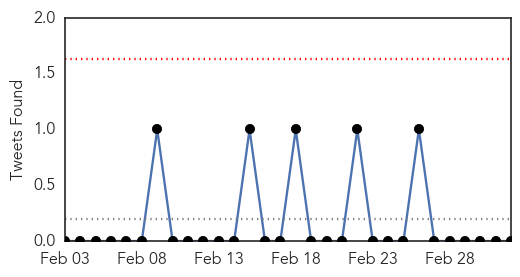
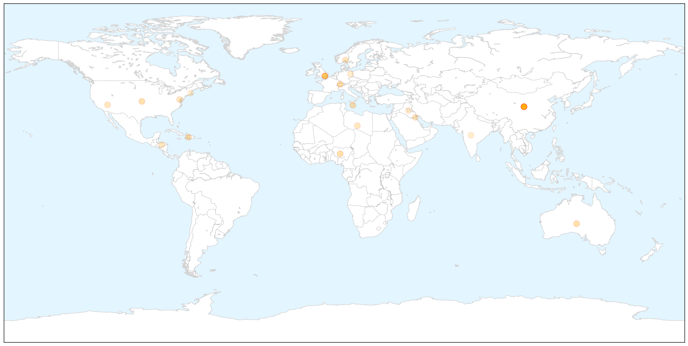
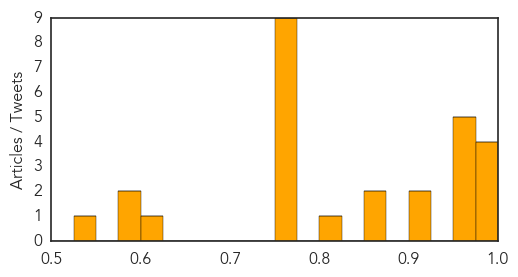

Yellow Fever
30-Day Web Trend
3 alerts, 0 warnings

30-Day Twitter Trend
0 alerts, 0 warnings

Article Locations


Article Confidences

Top Articles:
-
No articles found for Mar 04, 2015
Top Tweets:
-
No tweets found for Mar 04, 2015
Influenza
30-Day Web Trend
0 alerts, 0 warnings

30-Day Twitter Trend
0 alerts, 0 warnings

Article Locations

X

Article Confidences
Top Articles:
- 1.000
- Flu vaccine delayed as killer flu strikes
- 0.999
- Flu Scan for Mar 03, 2015
- 0.987
- Flu Season Isn't Over Yet
- 0.985
- You Probably Don't Have The Flu
- 0.966
- Study Shows Average Adult Only Catches Flu Once Every Five Years
- 0.957
- Flu only strikes average adult about twice every 10yrs
- 0.956
- Government criticised for not doing enough to warn about poor flu vaccine
- 0.955
- LAIV No Longer Preferentially Recommended for Young Children
- 0.953
- Flu only strikes average adult about twice every 10yrs , AniNews.in
- 0.924
- Flu Infections Become Less Common The More You Age
- 0.911
- tracking diseases in the mobile age
- 0.870
- Adults only catch flu around twice a decade, study finds
- 0.864
- Adults Over 30 Get The Flu Once In Every Five Years; Other Instances Might Just Be From A Common Cold
- 0.800
- New flu research nothing to sneeze at
- 0.771
- Adults Only Catch Flu Around Twice a Decade
- 0.769
- Adults only get the flu twice a decade, study finds
- 0.762
- Adults only catch flu around twice a decade, study finds, Europe News & Top Stories
- 0.751
- March 4, 2015 Archives
- 0.751
- March 3, 2015 Archives
- 0.751
- March 3, 2015 Archives
- 0.751
- March 3, 2015 Archives
- 0.751
- March 3, 2015 Archives
- 0.751
- March 3, 2015 Archives
- 0.605
- Influenza costs Germany billions of euros
- 0.595
- The Iraqi Red Crescent Society distributes food assistance to the displaced families and organizes health awareness campaigns in Dhi Qar governorate - Iraq
- 0.578
- Flu warning for UAE travellers to India
- 0.532
- American Dryer's eXtremeAir Cold Plasma Clean(R) Technology Kills Influenza A Virus
Top Tweets:
-
No tweets found for Mar 04, 2015